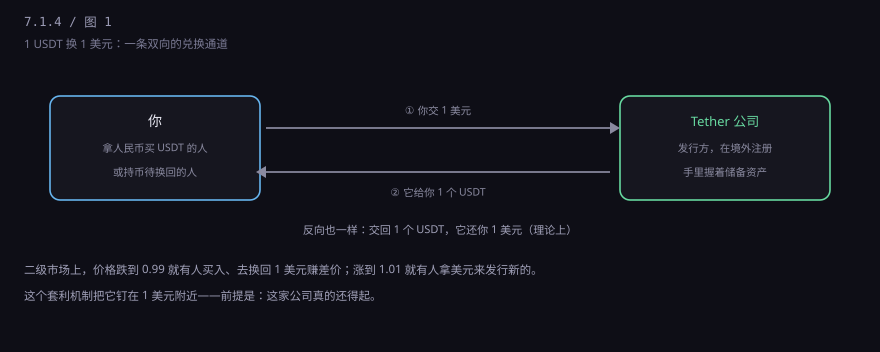
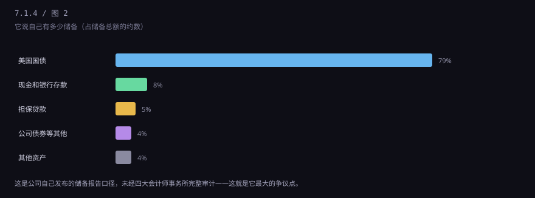
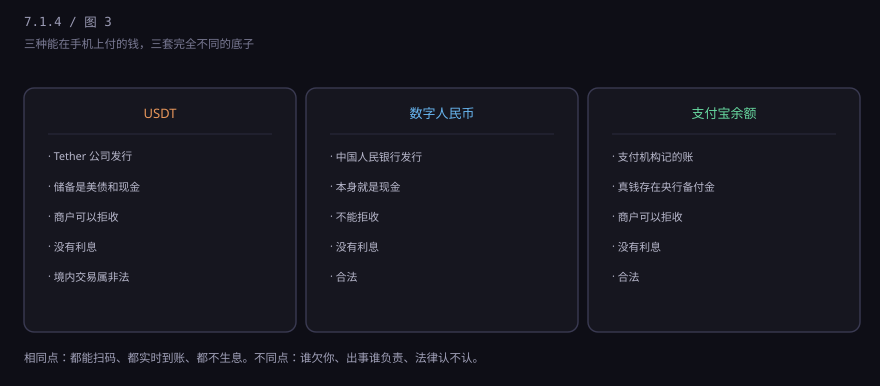
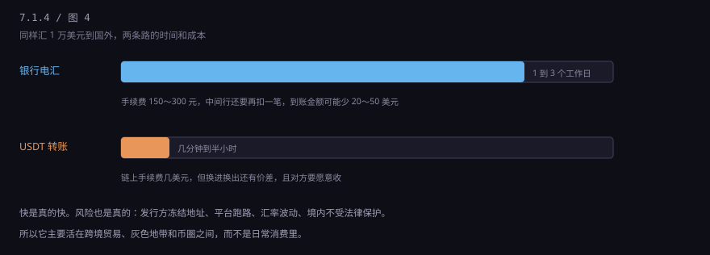

约 0.3 万字 · 4 张图 · 它标价永远一美元，却不在任何一家银行的账上
打开任何一个币圈行情页面，你会看到一列：BTC、ETH、USDT、USDC…… BTC 那行数字一直在跳，USDT 那行几乎不动，永远在 1.00 附近晃， 偶尔掉到 0.998，偶尔上到 1.002。
这种"锚定美元"的币，行业里叫稳定币。 USDT 是其中最大的一种，发行方是一家叫 Tether 的公司， 注册地换过几次，现在在萨尔瓦多。它不在中国境内运营，也不受中国监管。
关键的一句话：USDT 不是美元，也不是"数字化的美元"。 它是一张凭证，证明"Tether 公司欠你 1 美元"。 这跟银行存款的性质其实是一样的——都是别人欠你——但欠你的人从银行变成了一家公司， 而且这家公司不在存款保险的保护范围里。
想象一个寄存处。你把 1 美元交给它，它给你一张写着"1"的牌子； 你拿牌子回来，它还你 1 美元。牌子可以在别人之间转手， 谁拿着牌子，谁就能去换那 1 美元。
USDT 就是这个牌子。区别是：这个寄存处开在互联网上， 牌子是一串加密的记账记录，转让不需要经过银行，几秒钟就能到地球另一边。
所以它有三个身份，得同时记住：
2014 年它出现的时候，币圈有个很实际的问题： 比特币价格一天能波动 10%，你上午卖了币，下午可能就少了一辆车。 但币圈的交易都在链上，钱进不来出不去——银行不给这些交易所开户。
于是需要一个东西：在链上流通、价格又稳定的计价单位。 稳定币就是干这个的。你卖了比特币，先换成 USDT，等想买的时候再换回去， 中间不用出链、不用过银行。
后来它长出了第二个用途：跨境转钱。 从中国给在迪拜的供应商付款，银行电汇要两三天、手续费几百块； 用 USDT，几分钟、几美元。对做外贸的人来说，这个诱惑很大。
第三个用途就不那么光彩了：绕过外汇管理和资金监测。 这部分后面单独讲。
机制其实很简单，两条通道加一个套利。

通道一：你给 Tether 1 美元，它给你 1 个 USDT（叫发行或申购）。 通道二：你把 1 个 USDT 交回去，它还你 1 美元（叫赎回）。
有了这两条通道，市场上就不会偏离太多。假设有人在交易所把 USDT 砸到 0.98， 立刻会有人买下来，拿去 Tether 赎回 1 美元，赚 2 分钱。 买的人多了，价格就回到 1。反过来涨到 1.02，就有人拿美元去申购新币来卖，把价格压回去。
这个机制有个前提：Tether 真的随时能还出美元。 如果大家都去赎回，它拿不出来，通道就断了，锚也就断了。 这个场景有个名字，叫"挤兑"——和银行挤兑是一回事。
那它拿什么撑住这 1000 多亿美元的负债？答案是：一堆资产。

早年它的储备里有一部分是"商业票据"，还有一段说不清楚的时期—— 2019 年纽约州总检察长办公室调查发现，它曾把储备挪去填补另一家公司的窟窿。 这件事最后以 1850 万美元和解收场，也成了它信誉上永远的污点。
现在它的储备以大额美国国债为主，另外还有现金、银行存款、担保贷款、公司债。 它每季度发布一份储备报告，但这份报告不是四大会计师事务所的完整审计， 只是一份" attestation "（鉴证报告）。这是它被质疑最多的地方： 到底有没有 1:1，外界始终只能"基本相信"，不能"完全确认"。
不是理论上的风险，是已经发生过的事。
第一，脱锚。2022 年 5 月，另一种算法稳定币 UST 在几天内从 1 美元跌到几分钱， 几百亿美元市值蒸发。2023 年 3 月，USDC（另一种主流稳定币）因为把一部分储备存在 倒闭的硅谷银行，价格一度跌到 0.87。USDT 在 2018 年、2022 年也出现过短暂跌破 0.95 的情况。 "稳定"是目标，不是保证。
第二，冻结。Tether 有一个黑名单功能，可以把某个地址上的 USDT 直接锁死， 谁也转不走。它配合执法部门做过很多次，累计冻结金额以十亿美元计。 这意味着：你账上的币，不完全由你控制。觉得"链上资产没人能管"的人，往往不知道这一条。
第三，合规。这是最容易被忽略、后果最重的一条。见下一节。
因为它同时具备三个特征：跨境、快、看起来匿名。
电信诈骗得手后，钱要先"洗一遍"才能用。传统路径是：层层转账 → 取现 → 换外币 → 出境， 每一步都会留下银行流水。用 USDT 的路径是：受害人的钱 → 买币 → 转到境外地址 → 换成当地货币。 中间那段在链上，银行看不到。
但说它"匿名"其实不准确。链上每一笔转账都是公开的，任何人都能查。 真正难的是把地址和真人对应起来。所以办案时常见的一幕是： 资金流向查得清清楚楚，但地址背后是谁，要靠交易所的实名资料、IP 记录、设备指纹去锁定。
还有个更土的办法，叫"跑分"：招募一堆普通人，用他们的银行卡收款、买币、转出， 每笔给几十块佣金。这些人很多是学生、宝妈，以为是兼职，实际成了洗钱链条上的一环， 银行卡被冻结、被列入惩戒名单，五年内不能开新户。
这一条必须说清楚，不含糊。
2021 年 9 月，中国人民银行等十部门发布《关于进一步防范和处置虚拟货币交易炒作风险的通知》，明确： 虚拟货币不具有与法定货币等同的法律地位； 虚拟货币相关业务活动属于非法金融活动，包括兑换、作为中介、定价、 代币发行融资、衍生品交易等； 境外交易所通过互联网向境内居民提供服务，同样属于非法金融活动。
对普通人意味着什么？三层：
还有一条更重的：如果明知是犯罪所得还帮着换币转移，可能构成掩饰、隐瞒犯罪所得罪 或者帮助信息网络犯罪活动罪。这不是"我不懂"能挡住的。
这三个东西都能在手机上付钱，但底子完全不同。

一句话总结：数字人民币是央行欠你，支付宝余额是支付机构欠你但真钱在央行， USDT 是一家境外公司欠你。前两个出问题有国家机器兜底， 第三个只能靠这家公司的资产和良心，以及你所在国家的法律是否管得到它。
公平地说，它确实解决了一个真问题：在美元体系之外，给没有银行账户的人一个美元账户。 土耳其、阿根廷、尼日利亚这些本币大幅贬值的地方，普通人买 USDT 就是为了保住购买力。 对他们来说，这不是投机，是自救。

但它的代价也很实在：不透明、可冻结、无保险、跨境监管套利。 它更像一张"离岸美元存单"，而不是"更好的美元"。 下一节讲另一个极端：一个没有任何东西锚定、也没有任何公司负责的币——比特币。